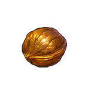
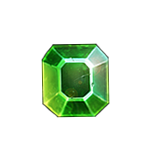
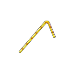

Получено: файл; исходный URL. Иллюстрация «Изумрудная коллекция» из каталога ViveR_9, сопоставлена по точному названию; возможны отличия версий. Оригинальный файл без перекодирования; авторство отдельно не установлено. Страница: источник.
Изумрудная коллекция
Браузерная социальная версия; историческая статья; дата редакции неизвестна- Тип
- Коллекции
- Версия и дата
- Браузерная социальная версия; историческая статья; дата редакции неизвестна
Элементы коллекции



Данные по источнику · Браузерная социальная версия · историческая статья; дата редакции неизвестна
Предварительно: один материал, требуется сверка. Требуется сверка.
- Состав (источник Zombie-island)
- Четвертак; Золотой орешек; Изумруд; Кленовый листок; Соломинка.
- Награда (источник Zombie-island)
- 1000 Опыт; 3 Зомбаксы.
- Изумрудную коллекцию можно найти в сундуках под Подземным бамбуком
- Склад Хакера; Подземный ресурс.
- Изумрудную коллекцию можно найти в сундуках под ресурсами на островах
- Ужасный остров; Город-призрак; Остров Чудовища; Ива; Дубок розовый; Туя маленькая; Туя средняя; Туя большая; Старый пень; Старое дерево.
- Изумрудную коллекцию можно выиграть в рулетке
- Белоснежная яхта; Телескоп.
- Изумрудную коллекцию можно создать в Планетарии
- Четвертак; Веер; Бозон Хиггса; Планетарий; Золотой орешек; Фонарик; Изумруд; Сакура; Кленовый листок; Солнце; Соломинка; Японский зонт.
- Изумрудную коллекцию можно найти в ценностях
- Гламурный подарок; Коллекционная посылка; Коллекционный; Коллекционер; Носок изобилия; Сюрприз бригады; Череп; Букет роз; Яблочный сюрприз; Сундук Чудовища 3; 500 Эскимо; Подарок Зомби; Осенний презент 3.
- Изумрудная коллекция есть в сокровищах Зомби Фермы
- Ящик Дворника; Черный ящик; Гламурный Подарок; Дом привидений; Чудо-ель; Лампа света; Дерево страсти; Цирковой шатер; Хэллоуинский маяк; Алтарь; Изумрудная башня; Мавзолей; Сад бабочек; Золотая бутса.


Данные по источнику · браузерная версия; платформа не указана · дата редакции не установлена
Предварительно: Содержимое списка: изображения и колонки могут терять смысл при извлечении текста; отдельная страница и дата не проверены. Подписи alt иногда ошибочны.. Требуется сверка.
- Текст карточки из каталога
- 1000 опыта и 3 Зомбакса Четвертак Золотой Орех Изумруд Кленовый листок Соломинка Как получить: В сундуках (т.е. когда ресурс полностью "выкопан") под: Подземный Бамбук ( "Склад Хакера" ) Ива, Туя, Старый пень, Старое дерево. Также, Изумрудную коллекцию можно получить, разбив Сюрприз бригады.
Данные по источнику · браузерная версия; на сайте указана игра ВКонтакте · дата редакции не установлена
Предварительно: Исторический текст; сильно совпадает со справкой Zommbie.at.ua, независимость не доказана. Отрицания и доступность могут измениться с патчем.. Требуется сверка.
- Где искать по странице «Зомбастики»
- В сундуках в шахте хакера, в новом декоре бамбук.
Данные по источнику · историческая браузерная игра; площадка не уточнена · 24.02.2013 — дата каталога; редакция неизвестна
Предварительно: Проверен текст в каталоге сайта; вероятность выпадения не указана. Исторические версии и даты могут различаться; списки и награды требуют сверки, независимость сайта от других справочников не установлена.. Требуется сверка.
- Награда в источнике
- 1000 опыта и 3 зомбакса
- Места в источнике
- Склад хакера — палочками-выручалочками; после вырубки деревьев на Ужасном острове и в Городе Призраке.
Связанные сущности
нет проверенных связей — требуется сверка.
Источники
- прочитано: Zombie-island.moy.su; проверка 2026-11-21
- ZOMBIA: прочитана карточка в списке
- Ссылка на отдельную страницу; отдельно не проверена
- Зомбастики: прочитана соответствующая строка; возможная копия другого справочника
- ViveR_9: изображение в каталоге коллекций; совпадение названия
- zombi-ferma.ucoz.net: каталог коллекций